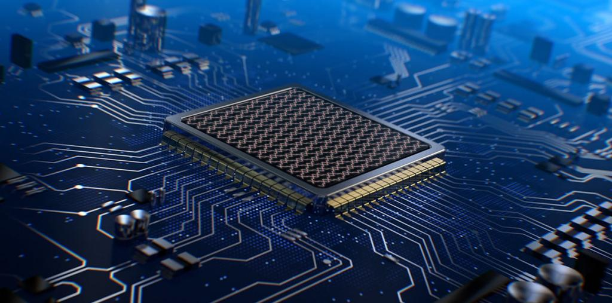
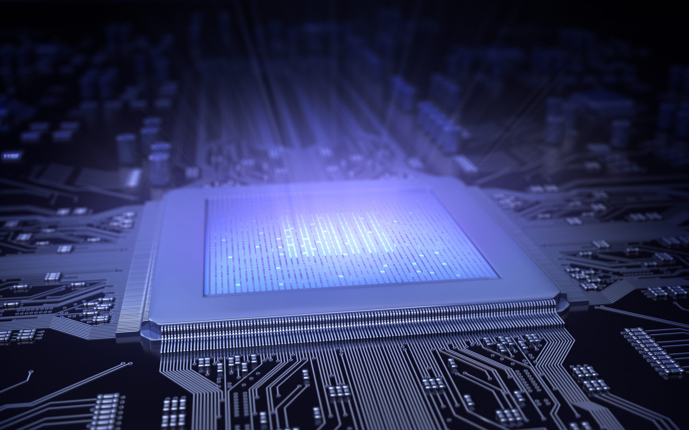

Оптические компьютеры
Преимущества оптического компьютера
Введение
Полезность любой технологии измеряется ее актуальностью, поэтому разработка оптических компьютеров стала одной из популярных тем сегодня. Техники и разработчики всего мира пытаются достичь совершенства в нано-технологиях, поэтому неустанно проводят различные исследования. Оптические компьютеры - одна из самых популярных тем. Все преимущества позволяют удостовериться в их необходимости уже сегодня.
Преимущества оптического компьютера

Преимущества оптического компьютера
Оптические компьютеры обладают рядом преимуществ перед традиционными электронными устройствами:
Высокая скорость обработки информации.
Большая пропускная способность.
Меньшее потребление энергии.
Меньший размер и вес.
Устойчивость к электромагнитным помехам.
Перспективы развития оптических компьютеров

Развитие оптических компьютеров представляет большой интерес для научных и инженерных кругов. Многие исследования уже проводятся для улучшения технологии передачи и обработки оптической информации. Увеличение скорости работы компьютера, уменьшение размеров и энергопотребления – это только некоторые из перспектив развития этой технологии.